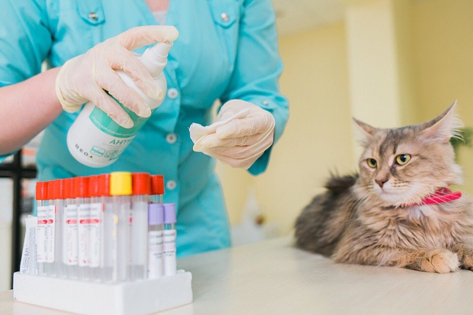
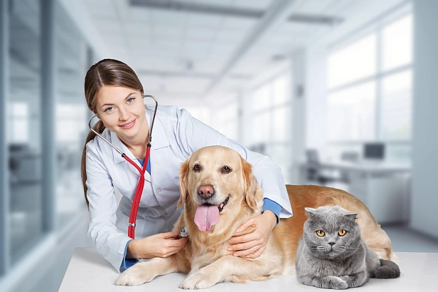
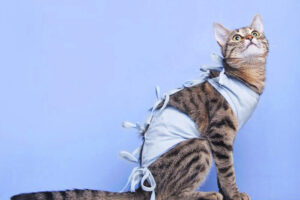
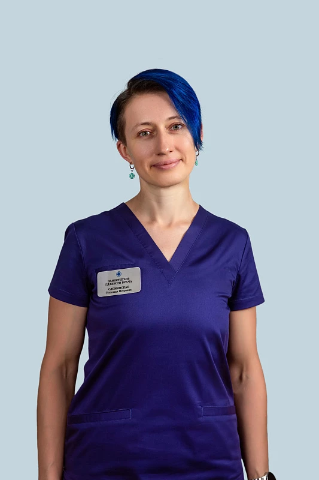
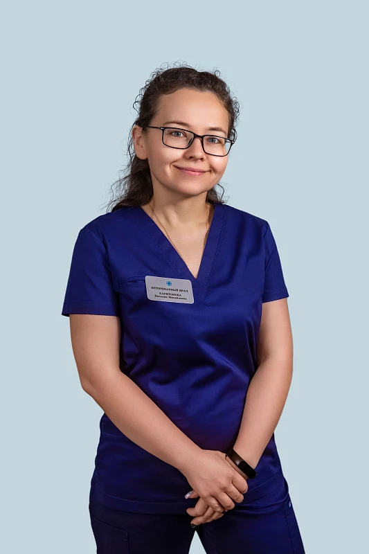

Об организации
ГБУ Республики Марий Эл «Йошкар-Олинская горСББЖ»
Государственное бюджетное учреждение Республики Марий Эл
«Йошкар-Олинская городская станция по борьбе с болезнями животных» создано
с целью предупреждения и ликвидации заразных и массовых незаразных болезней животных
График работы
Обед12:00 – 13:00
Понедельник08:00 – 17:00
Вторник08:00 – 17:00
Среда08:00 – 17:00
Четверг08:00 – 17:00
Пятница08:00 – 17:00
Суббота09:00 – 15:00
ВоскресеньеВыходной
Услуги
Осмотр животого

Лабороторная диагностика
Стационар
Стерелизация животного
Наши специалисты
Попова Юлия Александровна
Ветеринарный врач - терапевт
Сломинская Надежда Петровна
Заместитель главного врача, ветеринарный врач - невролог
Маслюк Елена Викторовна
Заместитель главного врача, ветеринарный врач - невролог
Антонова Вера Сергеевна
Ветеринарный врач - терапевт
Харитонова Наталия Михайловна
Ветеринарный врач - анестезиолог
Цены